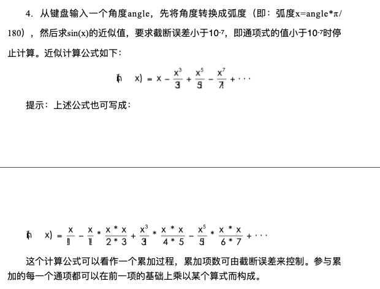
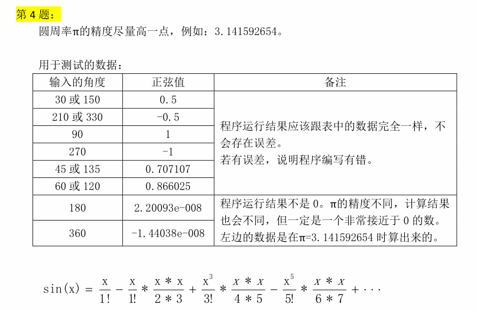
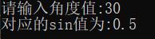
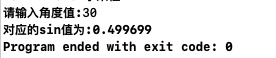

今日 有一位同样读大一的朋友向我求助有关c++的作业题 他说他的程序逻辑正确 但是结果的精度不对
题目如下:


这是一道看起来十分简单的作业题 我按照要求快速地写了一个版本 不出所料 一样遇到了精度问题
为什么会出现这种问题?
首先 计算机中的浮点数是不够精确的 这是为了运算速度所做的牺牲
在我写的代码中 使用的是double 为了使结果精确 要能尽量减少不必要的计算过程
而我用了cmath头文件中的pow函数 这使得double会被计算很多次导致结果精度降低
于是我决定写一个无pow版本 从公式出发 思路如下:
原式化简:
sin(x) = x/1! - x^3/(1!*2*3) + x^5/(3!*4*5) - x^7/(5!*6*7) ...
拆分:
sin(x)= x/1! - x^3/(1!*2*3) + x^5/(3!*4*5) - x^7/(5!*6*7) ...
拆分之后我们可以尝试用一个变量去替换其中的数字:
sin(x)= x/1! [i=1] - x^3/(i!*(i+1)*(i+2)) [i=3] + x^5/(i!*(i+1)*(i+2)) [i=5] - x^7/(i!*(i+1)*(i+2)) [i=n] ...
引入一个变量p 替换幂:
p=x sin(x)= p/1! [i=1,p=p*x*x] - p/(i!*(i+1)*(i+2)) [i=3,p=p*x*x] + p/(i!*(i+1)*(i+2)) [i=5,p=p*x*x] - p/(i!*(i+1)*(i+2)) [i=n,p=p*x*x] ...
再引入一个变量f 替换阶乘:
f=1 p=x sin(x)= p/f [i=1,p=p*x*x,f=f*(i+1)*(i+2)] - p/f [i=3,p=p*x*x,f=f*(i+1)*(i+2)] + p/f [i=5,p=p*x*x,f=f*(i+1)*(i+2)] - p/f [i=n,p=p*x*x,f=f*(i+1)*(i+2)] ...
再引入一个变量n 替换其中的负号:
n=1 f=1 p=x sin(x)= p/f [i=1,p=p*x*x,f=f*(i+1)*(i+2),n=-n] + n*p/f [i=3,p=p*x*x,f=f*(i+1)*(i+2),n=-n] + n*p/f [i=5,p=p*x*x,f=f*(i+1)*(i+2),n=-n] + n*p/f [i=n,p=p*x*x,f=f*(i+1)*(i+2),n=-n] ...
现在每项的式子完全相同了 只需将其转换成对应的程序
我们要考虑结束条件 即当其中一项的绝对值小于1.0e-7时 结束这个循环
最终答案 :
1 double x;
2 cout << "请输入角度值:";
3 cin >> x;
4
5 x = x * 3.141592654 / 180;
6
7 double n = 1;
8 double f = 1;
9 double p = x;
10 double i = -1;
11
12 double term = 0;
13 double result = p / f;
14
15 while (1)
16 {
17 i += 2;
18 p = p * x * x;
19 f = f * (i + 1) * (i + 2);
20 n = -n;
21 term = p / f;
22 if (term < 1.0e-7)
23 break;
24 result = result + n * term;
25 }
26 cout << "对应的sin值为:" << result << endl;结果正确:

再看看朋友的代码:
1 double angel,term,sum=0,i=1,multi=1,sign=-1;
2 const double pi=3.141592654;
3 cout<<"请输入角度值:";
4 cin>>angel;
5 angel=angel*pi/180;
6 term=angel;
7 while(term>=1.0e-7||term<=-1.0e-7)
8 {
9 sum+=term;
10 angel*=angel*angel;
11 multi*=(i+1)*(i+2);
12 term=sign*angel/multi;
13 sign*=-1;
14 i+=2;
15 }
16 cout<<"对应的sin值为:"<<sum<<endl;结果:

思路大致和我相同 但是其中一步 angel*=angel*angel; 不对
在我的代码中 这一步对应的是 p = p * x * x; 其中x是不变的 他代码的这一部分并不等效于sin公式
END